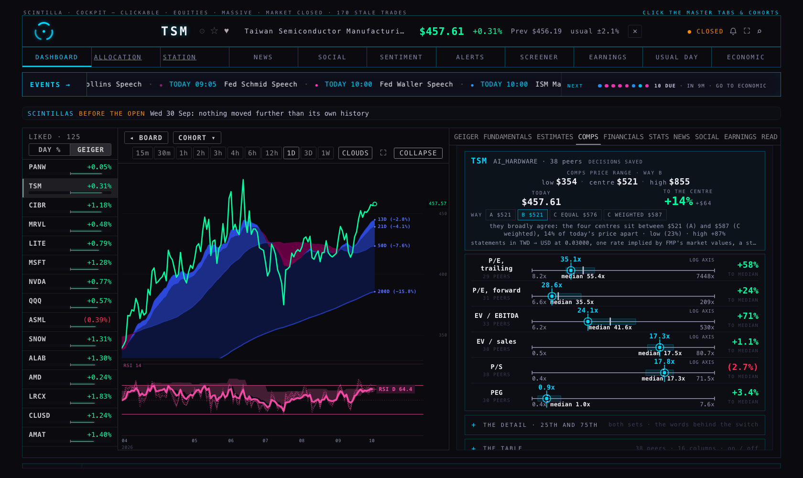
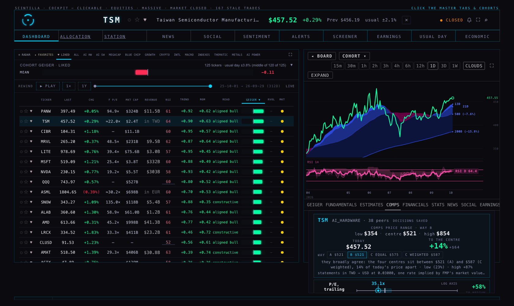
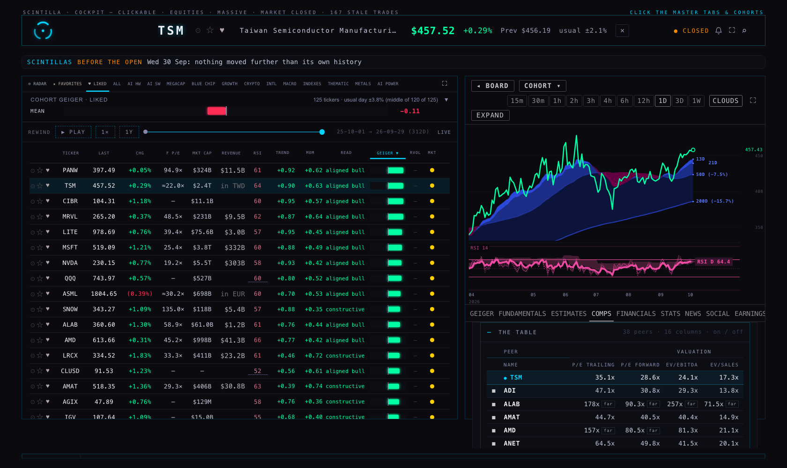
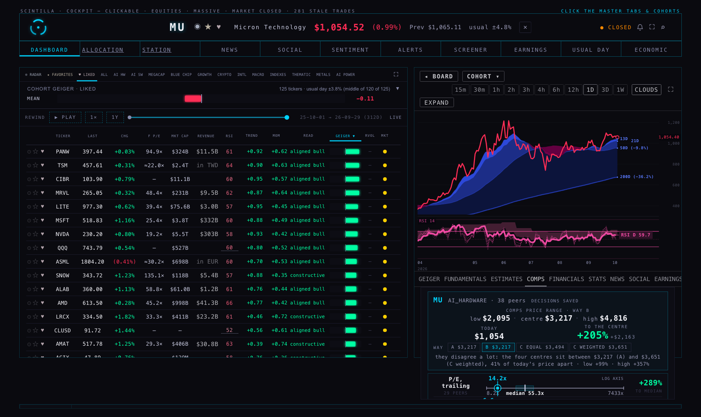
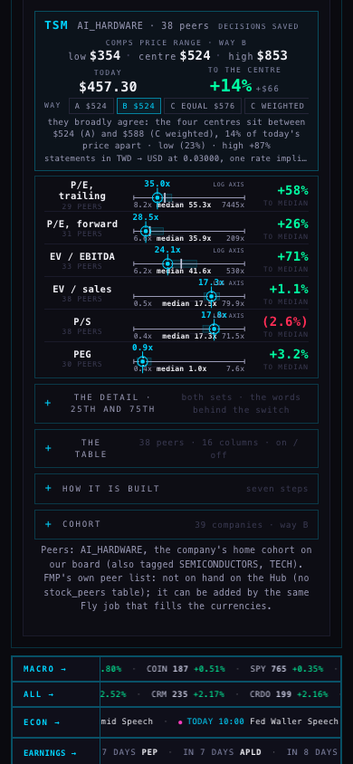
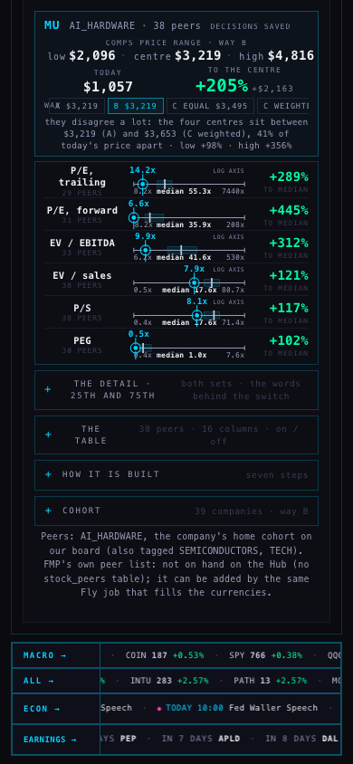

The COMPS tab now opens on the conclusion: one card with the comps price range (low · centre · high), today's price, the upside to the centre, a small switch A · B · C equal · C weighted, and one line saying how far the four ways disagree for this company. Under it the six rows, each with the company drawn as an overlay (a cyan ring-and-dot on its own cyan rule through the row, its multiple above in cyan) against the peers' quiet line, box and median tick, and one upside number per row. The ticker is written once, in the card. There are no legend sentences: every mark carries its own label. The 25th and 75th, the words behind the switch, the original comps table (every column of comps.mjs, on/off per peer and per valuation cell), the seven-step ladder and the cohort table sit behind four closed disclosures. Foreign filers are converted to USD at the rate for each statement date, the per-share basis is checked against the ADR share count, and the row says so: TSM now carries P/E 35.1x, EV/EBITDA 24.1x, EV/sales 17.3x and P/S 17.8x instead of 1.1x and three blanks. Outliers are parked: the switch and the saved decisions stay (they now save to comps_decisions, which the coordinator applied), NOT MEANINGFUL and FAR FROM THE PACK are quiet grey chips in the table.
| Company | Today | Way B · low | Centre | High | To the centre | A | C equal | C weighted | How far the ways disagree |
|---|---|---|---|---|---|---|---|---|---|
| TSM | $458 | $354 | $521 | $855 | +14% | $521 | $576 | $587 | broadly agree · 14% of the price apart |
| MU | $1,057 | $2,096 | $3,215 | $4,856 | +204% | $3,215 | $3,498 | $3,654 | disagree a lot · 42% apart |
| NVDA | $230 | $257 | $385 | $622 | +67% | $385 | $391 | $384 | agree · 3% apart |
TSM's six rows against the 38 AI_HARDWARE peers: P/E trailing 35.1x vs median 55.4x (+58% to the median), P/E forward 28.6x vs 35.5x (+24%), EV/EBITDA 24.1x vs 41.6x (+71%), EV/sales 17.3x vs 17.5x (+1.1%), P/S 17.8x vs 17.3x ((2.7%)), PEG 0.9x vs 1.0x (+3.4%). Rows whose peers span more than 50× (AXTI at 3,297x and CRWD at 7,436x on trailing P/E) are drawn on a log axis and say so.
MU reads +204% because its trailing EPS jumped on the 30 Sep report (P/E 14.2x against a 55x median) and its FY Aug-2027 estimate is $158: the four ways disagree by 42% of the price, which the card says in one line. That is what the data says; the template shows it rather than smoothing it.
The table (disclosure "the table"): the company pinned on top, cyan and ruled; one row per peer with its ■ switch; 16 columns in five groups: valuation (P/E trailing, P/E forward, EV/EBITDA, EV/sales, P/S, PEG), growth (revenue TTM, revenue next FY, EPS next FY), margins (gross, operating, FCF), balance sheet (net debt / EBITDA), capex (CapEx / revenue, CapEx growth, new revenue per CapEx dollar). A valuation cell is itself a switch for that one measure of that one peer. NM and FAR are quiet grey chips.
Peers: the company's home cohort on our board (tickers.cohort), named at the foot of the tab with the other tags it carries. FMP's own peer list is not on the Hub (no table holds it); the same Fly job that fills the currencies can add it.






What I saw. The company's mark is unmistakable: a filled cyan dot inside a cyan ring with a cyan rule from above the row to below it and its multiple in cyan above, against grey peers and a white median tick; no peer number is drawn that way. Each row carries one upside number on the right, and the ticker is not repeated on any row (the probe counts zero "TSM TODAY"). The switch changes the range, the upside and the line at once (C weighted: TSM $362 – $956, centre $587, +29%). The TWD line under TSM's card reads "statements in TWD → USD at 0.03000, one rate implied by FMP's market values, a stand-in · per US share"; the full words are in the detail. No page error and no chart API failure in any run.
Cause. FMP serves TSM's statements in TWD (EPS 434.95, revenue 4,450 bn, net cash 2,066 bn) and its US listing's price in USD ($458). The Hub's tables carry no reporting currency and no exchange rate, so P/E came out at 1.1x and EV = USD market value + TWD net debt priced nothing. The per-share figures are already per US-listed share: TSM's diluted share count on the newest quarter is 5,186 M, the ADR count (the ordinary count is five times that), and BABA's 2,416 M is its ADR count; FMP serves ADR filers on the ADR's share count. The check is on the row: diluted shares × USD price ≈ USD market value. ASML lists ordinary shares on NASDAQ and reports in EUR; ARM and SIMO report in USD and need nothing.
Fix. fx.mjs converts every statement figure (income, balance, cash flow, the fundamentals row) at the USD rate for its own statement date, the estimates at today's rate, checks the share basis, and writes a note the row shows. The rates and currencies come from two new tables, public.filer_currency and public.fx_rates (migration supabase/migrations/20261001_fx_filer.sql, rollback alongside), filled by scripts/fx-filer-sync.mjs on Fly from FMP's reportedCurrency and historical-price-full/CCYUSD. The coordinator applies the migration and runs:
fly machine run <batch image> --rm -a scintilla-massive-stocks-batch -e SUPABASE_URL=https://wadinxqplrggagkvrdag.supabase.co -- node scripts/fx-filer-sync.mjs
Until then, two named stand-ins (the page says which it used, and the full words are in the detail): for EUR, CNY, HKD, GBP and DKK the ECB reference rates (via frankfurter.app, a public feed, daily since 2024, stored in fx-standin-ecb-2026-10-01.json); for TWD, which the ECB does not publish, the one rate FMP serves implicitly — its USD market value over its TWD market value on the fundamentals row (0.0300 USD per TWD on 22 Sep) — applied to every date. The reporting currencies of the ten foreign names on the Hub are from their annual reports in the same file, until filer_currency is filled.
Proof. TSM: 1.1x → 35.1x trailing P/E, and EV/EBITDA, EV/sales and P/S now exist (24.1x, 17.3x, 17.8x); the cohort table shows TSM at +14% to the centre instead of +3872%. ASML: converted at the ECB EURUSD rate per quarter (newest 1.1355), share basis per US-listed share, P/E trailing 57.6x and forward 41.2x against a $1,807 price. BABA: CNY, converted at the ECB CNYUSD rate (0.14915 on 30 Sep), P/E trailing 24.6x and forward 16.8x at $108, share basis per ADR; its home cohort INTL has only two peers that carry a P/E, so its range rests on two names and the rows say so (cohort-INTL-2026-10-01.json). NVO is not served on the Hub (no cohort, no rows), so there is nothing to convert; the stand-in file carries DKK for the day it is admitted. Tests cover the arithmetic on a hand-made TWD series and the fixture.
Why not FMP's rate today. The key lives only on Fly. The Common's short check was attempted (a node read on the batch machine printing values only) and the read of its output was denied by this session's permission layer, so the FMP rates were not fetched; the job script is the way to get them, and the page prefers the tables the moment they exist.
C equal averages the priced rows' 25ths, medians and 75ths with the same weight each. C weighted gives each row a weight ∝ prior × coverage × tightness × fit, normalised to one, with every factor printed in the detail:
For TSM today (the fixture of 08:30 ET) the weights come out P/E 14% · P/E forward 20% · EV/EBITDA 21% · EV/sales 19% · P/S 14% · PEG 13%: the capital-intensive prior lifts EV/EBITDA, but the row's loose middle half (27.8x to 71.3x) pulls it back; read the four factors in the detail — they move with the cohort. Sources: Liu, Nissim & Thomas, Equity Valuation Using Multiples, Journal of Accounting Research 40 (2002) — doi 10.1111/1475-679X.00042; Damodaran, Relative Valuation lecture notes (Stern, 2026 edition) — packet 2; Koller, Goedhart & Wessels, Valuation (McKinsey), ch. on multiples (forward EV/EBITA, peers of like ROIC and growth).
tickers.cohort, its members from ticker_cohorts; funds out by name.fundamentals, analyst_estimates, fundamentals_history, cashflow_history, balance_history, company_profile (FMP as the Hub stores it), converted by fx.mjs for foreign filers, then the same arithmetic as every comps page (comps-r3/r3.mjs compsRead with no cap; comps-single/comps.mjs components for the full table; P/S computed on the same inputs). Today's price: the Hub's live quote, else the chart API, else the profile's USD price (TSM's fundamentals row carries none).labels-r3.mjs; C equal and C weighted through its weightedBlend with the weights of template.mjs. The disagreement line: (highest centre − lowest centre) ÷ today's price.comps_decisions (applied), one dated row per state, the latest wins, put back is a new row; the C2 module's selection code unchanged.tests/comps-template.test.mjs (10): rateOn, filerCurrency, convertSrc on a hand-made series, the fixture's TSM and ASML, the full table's columns, the four ways and the disagreement, the reliability weights by hand, the conclusion on a selection, the cohort table, the Hub's wiring and look. Fixture: cohort-AI_HARDWARE-2026-10-01.json.fx_rates exists.filer_currency is filled; a new foreign admission would show "currency unknown" with its multiples unconverted and named.20261001_fx_filer.sql (+ rollback), scripts/fx-filer-sync.mjs.stock_peers).